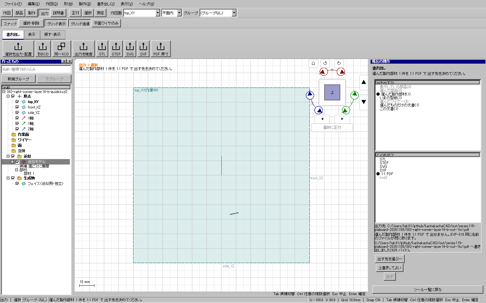

限定実装の関連回帰を確認済み。全体・配布版ゲートは待ちであり、公開更新6は今回の変更を含まない。全車体製作や実工作は未完成。
実UI364/365で、切り欠きのある曲面部品の上端付近を分けると、元と両側の体積和が合わず確定できなかった。入力と結果・実操作を保全した。
同じnativeの二側の分割を測る独立診断377では、基準点が異なると差は約2.37945e−4 mm³。元の局所点を共通にしただけでも約6.07037e−5 mm³が残った。元の点を切断平面へ投影して共通点とすると約1.26928e−6 mm³となり、既存の検査を満たした。別の一括Splitterに変えるだけでは解決しなかった。
切断面上の局所基準点では、切断キャップの体積fluxは数学的にゼロとなる。面積の微小な計算差をその面からの距離で増幅しない。結果の値を見て点を試し直す処理ではなく、元の点と指定平面から一意に決定する。
変更は平面分割の非公開な体積比較と、既存の準備済み形状の比較だけ。分割演算・元形状・境界・許容差・判定値・閉鎖性/向きの検査・公開API・保存形式は変えず、他のシェルや測定は既定処理を維持する。

最初の実UI379は確定自体が成功し、試験側の一時出力数の想定で停止した。既存の分割UIは二側のエンティティを作るため、その一時的な正側に二ソリッドが含まれる。今回の物理平板は、一つにつながった反対側の二つのキャップから取得し、それぞれ1ソリッドで独立保存する。一時出力の一般的な部品分割は今回変更していない。
後続の実UI382では、左断面3の製作領域抽出が「境界標本の上限」で停止した。分割と平板作成はできたが型紙は未作成であり、別件として調査を続ける。失敗を成功へ書き換えない。
証拠はout/series115-plaboard-20261105/の378（修正前）、381（修正後）、377、375/375b、cut-plane-reference-related-ui-20261109/、actual-cut-plane-reference-two-cap-corner-20261109/と385。診断形状をCADへ読み戻していない。回帰入力はtests_v2/fixtures/trimmed-notched-curved-stock.kshape。